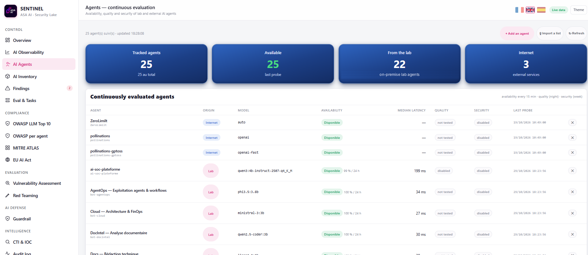
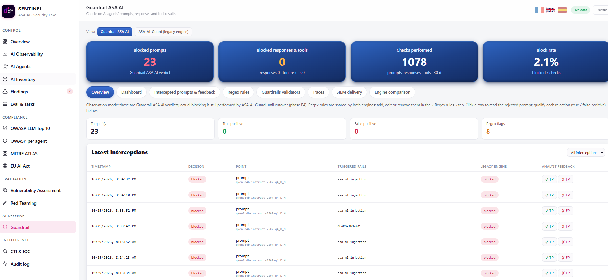
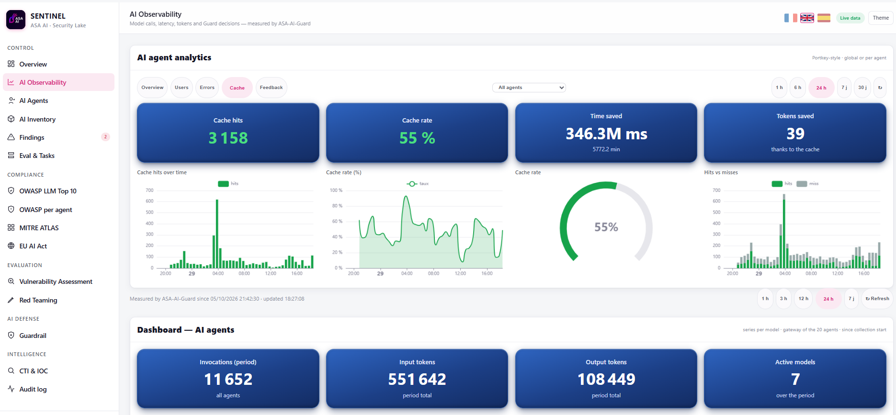
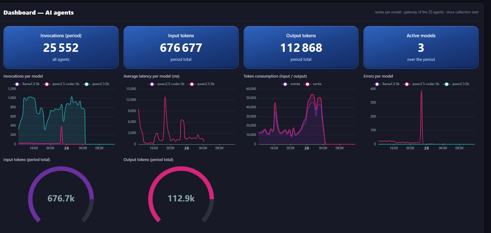

One platform for every AI agent you put to work.
Discover them. Attack them before anyone else does. Guard every prompt and every tool call. Measure what they cost and how they behave. Prove they comply. All of it on your own infrastructure, with your people making the final call.
- On-prem & sovereign
- Human in the loop
- OWASP · MITRE ATLAS · EU AI Act

How it fits together
Six capabilities. One continuous loop.
01 · Discover
You can't secure the agents you don't know you have.
SENTINEL builds a live inventory of every AI agent, model and MCP server in your estate, then keeps watching them: availability every 15 minutes, quality every night, security every week, for in-house agents and external AI services alike.
- Continuous evaluation of every tracked agent, internal or external.
- Model admission gate: fingerprint, license and chat-template drift checked before any model is used.
- Risk score per asset, so you know where to look first.


02 · Test
Attack your agents before someone else does.
Real attack prompts are played against each agent: prompt injection, system-prompt leakage, secret disclosure, jailbreaks. Every agent gets its own OWASP LLM Top 10 scorecard, and results map to the MITRE ATLAS techniques attackers actually use.
- Per-agent scorecards, category by category.
- Vulnerability assessment of the infrastructure your agents run on.
- Re-run on demand after every model or prompt change.

03 · Protect
A guardrail between your agents and your models.
Every prompt, every response and every tool result is checked inline before it lands. Injection attempts are blocked, risky calls are flagged, and your analysts qualify each decision as a true or false positive, so the guardrail gets sharper over time.

04 · Observe
Every call, every token, every error. On the record.
Requests, latency, token spend, errors and cache savings, globally or agent by agent. Spot the failing bot before your users do, and stop paying twice for the same answer.


05 · Detect
Threat intelligence that reaches your detections.
Indicators of compromise are collected every hour, enriched with reputation services and pushed into your detection lists. When one of them shows up on a machine, you know where, when and how often, and the AI SOC Analyst can take it from there.
- Hourly collection with feed health monitoring.
- Confirmed malicious indicators separated from the noise.
- Sightings in your environment, machine by machine.
Figures from our lab deployment.
06 · Govern
Compliance you can show, not just claim.
The EU AI Act, the OWASP LLM Top 10 and MITRE ATLAS become one live posture. Obligations are tracked article by article with owners and deadlines, and every agent decision lands in a hash-chained audit log your auditor can verify.
- EU AI Act register, classification, roadmap and FRIA wizard.
- MITRE ATLAS mapping of every test and detection.
- Regulator pack exportable in one click.


Built on three commitments
Your data stays yours.
SENTINEL runs on your infrastructure with local models. Prompts, logs and incidents never leave your walls.
People decide.
The platform recommends and prepares. Every action with consequences waits for a human approval, and is logged.
Open standards.
OWASP, MITRE ATLAS, NIST AI RMF and the EU AI Act, so your results speak the language of your auditors and your SOC.
See your AI estate the way an attacker would. Then lock it down.
A 30-minute walkthrough of SENTINEL on a live environment, tailored to your agents and your regulatory constraints.